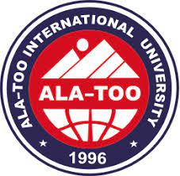

Ala-Too International University-Gateway to the world

Ala-Too International University (AIU) was established in 1996 and it is located in Bishkek, the Kyrgyz
Republic. Our university consists of five blocks, where there are classrooms and laboratories
equipped with the Internet and modern interactive whiteboards. Our "Campus" is an educational
center with a library, a conference hall, 3 stadiums, 1 tennis cord, 1 gym, 6 computer classes, 1
Internet club, 1 research center, 2 cantinas, 1 medical center.
There are 4 faculties, 3 institutes and 16 departments in AIU. The faculties are:
Faculty of Engineering and Informatics
Faculty of Social Sciences
Faculty of Economics and Administrative Sciences
Faculty of Medicine
The staffing of the AIU is composed of highly qualified, experienced, young, active teachers from
Kyrgyzstan, Turkey, USA, China, India and other countries. Undergraduate, graduate and
postgraduate programs are conducted in a multicultural and democratic atmosphere of mutual
respect. Our university has bilateral agreements with some universities in Europe, China, America,
Turkey and Cyprus.
Visit to official Website
Webpage of Ala-Too university